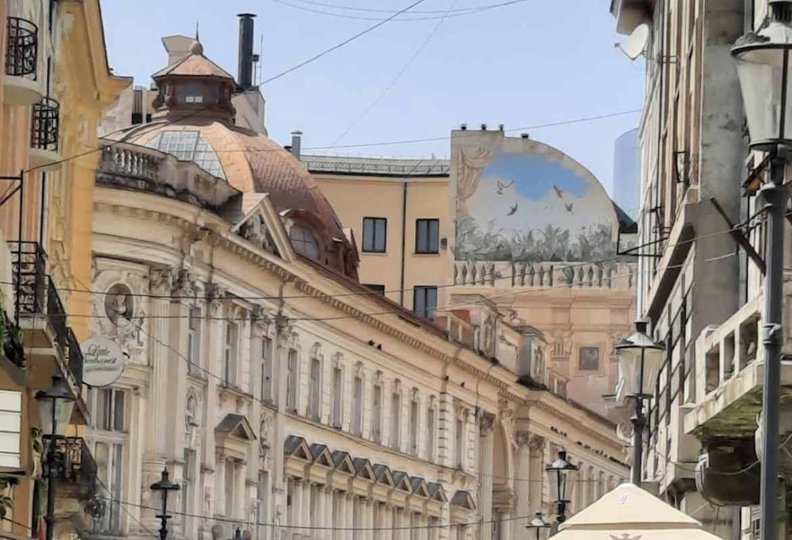
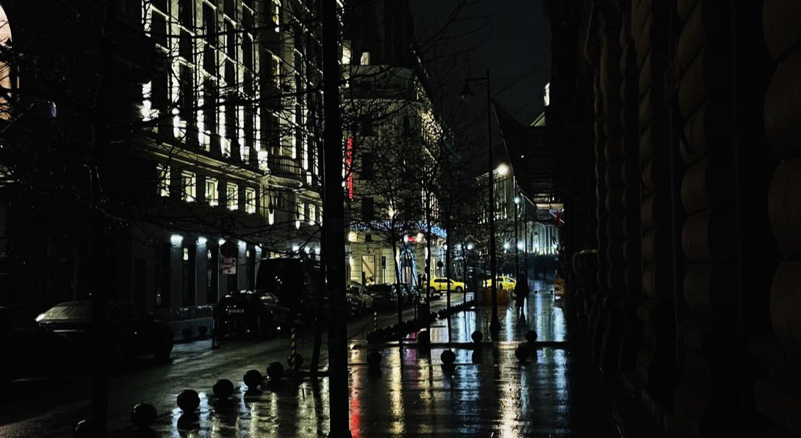
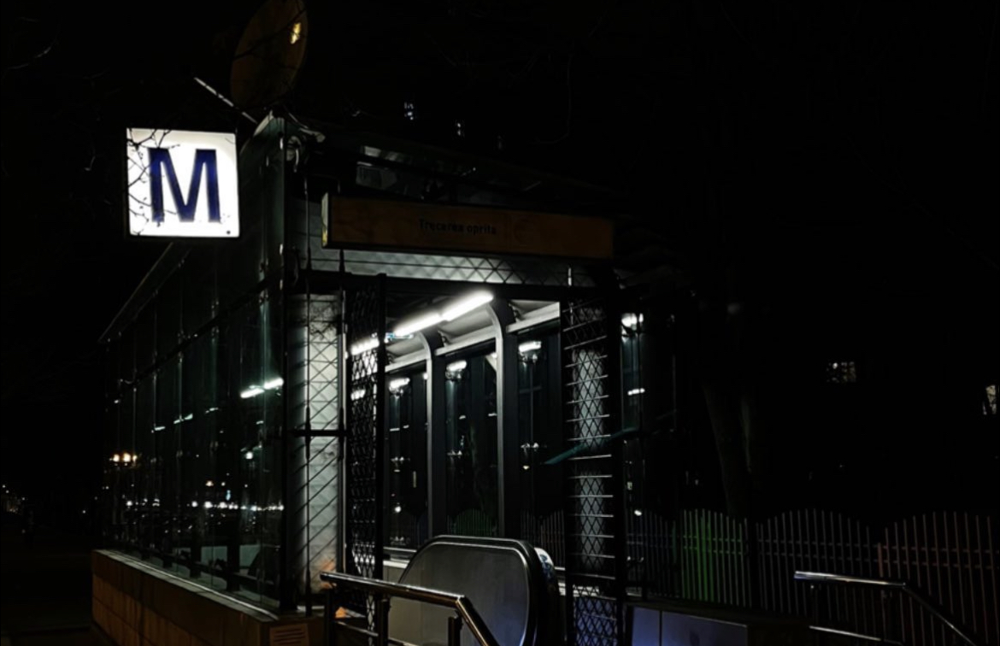

Love letter to urban Life
----------------------------------------------------------------------------------------------------------------------------------
Oh urban life how good you are, as someone who experienced both urban and rural life (granted I only experienced rural for a month at a time and quite rarely) I have to say urban wins by a long shot, understatement. Going from loud to quiet is much more uncomfortable than quiet to loud, cities just boom with life, nothing quite beats listening to some music in a cafe on a busy street at night, looking out at the blinking city lights and hearing the powerful sound of people, a background noise that almost sounds like static when you're not paying attention, that sound of people living is wonderful, a mesh of different lives and episodes, experiences and emotions strong enough they earned verbalisation, sights and sounds of people hugging, crying, screaming at their phones, walking silently, friend groups laughing and screaming, old people chit-chattering, dogs barking, all of these impactful yet rutinical moments mesh together, and they don't cancel out, they amplify eachother, feeling such a big volume of the human spirit is often overwhelming, but always bitter-sweet, you will not get this in any rural place.
Another big wonder is exploration, you will rarely run out of city to explore, it always has a new square, new street, new cafe, new club, new bar to go to and experience, you will also never run out of people, if in rural areas you grow up with the same maybe 30-ish people your age, in cities there are basically endless people your age, the ammount of walk-by friendships I made speaks volume, cities are great for teen life especially, where you get bored of things exponentially fast, cities are what you're craving
This is not to say cities are perfect, the rapidity and overwhelment can be tiring sometimes, and the quiet peace that rural brings is very special and invaluable, being able to see the stars is invaluable. As with anything in life, balance is key, rural areas are great when you need a break, when you need to pause and breath, rethink and reinvent yourself, cities are great for life, for living, for making connections and memories, cities are great for *feeling*, for discovering and for attempting, I rest my case that life in cities, at least during your youth, is the best.
----------------------------------------------------------------------------------------------------------------------------------
Photos taken by me in the stunning city of Bucharest
[back]